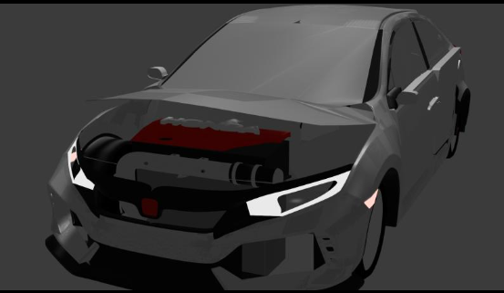

Honda Civic Type R 2021
The most challenging part was making the frame. I had to create a singular vertex and branch it out to create the entire outside frame, windows, and car doors.

The following are my newer projects created using Blender, a 3D software for game design and animation production, as seen in movies like Elephants Dream and Spring.
The most challenging part was making the frame. I had to create a singular vertex and branch it out to create the entire outside frame, windows, and car doors.
My first project in Blender was the donut. The hardest part was making the glaze drip down the donut. I wasn’t able to achieve it as I had hoped, but I hope you still find my donut delicious!

These are my older projects completed during the 2021-2022 school year.
A fun game of rock, paper, scissors using HTML, CSS, and JavaScript to play against the computer.
Using an EV3 intelligent brick and Legos to create a robot. By programming the hub and adding a few motors and sensors, the robot can perform basic actions.

A playlist project, similar to what you see on Spotify.